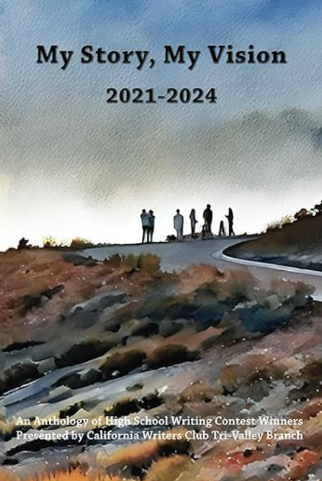

A Few Words
Sienna Wong is a poet from the Bay Area, California. She is obsessed with thrifting, hot tea, and books you can hold in your hands.
Published Work

My Story, My Vision 2021–2024
An anthology of high school writing contest winners including work by Sienna Wong.
View on AmazonIndividual Poems
Awards & Recognition
-
2025“Reasons Why Samurai Have Insomnia” Second Place — Poetry Tri-Valley Writers High School Writing Contest
-
2023“If I’m Being Honest” First Place — Poetry Tri-Valley Writers High School Writing Contest
-
2023“Stay” Honorable Mention — Poetry Tri-Valley Writers High School Writing Contest
-
2022“My Hand” First Place — Poetry CWC Mt. Diablo Young Writers Contest
-
2021“A Life that Mattered” Second Place — Poetry CWC Mt. Diablo Young Writers Contest
Where it began
I once lived in a box of white
One of Sienna’s earliest poems — and the quiet reason this site lives at boxofwhite.com.
I once lived in a box of white,
White walls, white floor,
No beginning, no end.Right when I was assured I would perish,
I found somebody I could cherish.
She was my chainsaw that cut me to freedom,
From my dome,
In my jail home,
My laugh was no longer hollow
for once
I spoke without limits
for once,
I didn’t feel like the world was a prison.Now I could love and feel,
For I had a friendship that was forever sealed.
My broken heart was finally mended,
By somebody I least expected.
Now I was protected,
By a blanket of warmth from a heart.She carried me like a mother bat,
As I clung onto her chest.
But one day she saw a mango of opportunity,
She dove just like the rest.
She let me freefall from the heavens
And I landed back in my cage.My eyes burned fire,
My heart held such desire.
Sour words spilled forth,
And melted into darkness like a half eaten ice cream cone.
I wept rivers of tears longing for freedom,
My heart sliced in half.Only till my floors were soaked with the salt,
And my eyes held no shine,
And my head bowed in grief,
And I didn’t feel any pain
When I became just an empty shell
Was when I was finally freed.
there is a bubble in my throat.
it tastes like asphyxiation,
and i’m holding my breath because i’m too afraid of losing you in the exhale.